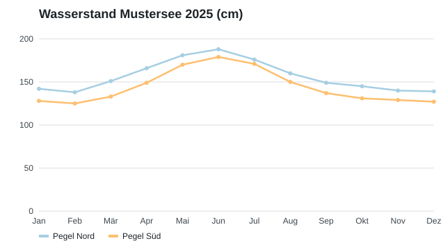

Wasserstände 2025
Die Grafik zeigt den Verlauf der beiden Messstellen im Jahr 2025. Im Juni wurde an beiden Pegeln der höchste Stand seit zehn Jahren gemessen.

Weitere Meldungen
Gut zu wissen
Die meisten Formulare können Sie online ausfüllen und per E-Mail oder Post einreichen. Bei Fragen hilft Ihnen das Team am Schalter gerne weiter.